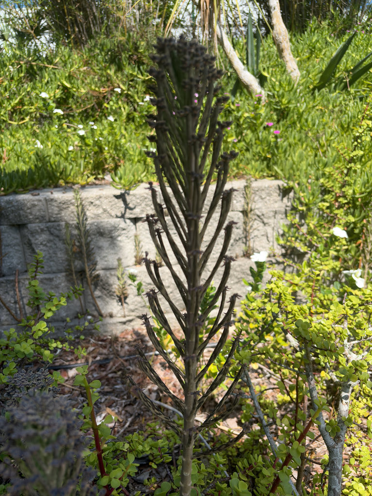

- Each narrow leaf carries a cluster of tiny, fully formed plantlets at its tip — not seeds, but miniature plants complete with roots, ready to drop and grow the moment they touch soil. A single parent plant can shed hundreds of these in a season, which is exactly how the name came about.
- The toxic compounds in this plant are chemically close cousins of the poisons found in the skin of Bufo toads — and they work by the same mechanism as the heart drug digoxin, disrupting the electrical rhythm of cardiac cells.
- Despite its flamboyant reproductive strategy, Mother of Millions rarely bothers to flower. Plants reproduce so efficiently through plantlets that flowering is almost redundant — though a well-grown specimen that gets a dry winter rest can produce a striking chandelier of orange-red bells.
Native to the arid savannas of southern and central Madagascar, where it grows in dry grasslands with sparse tree cover and long dry seasons. Like the continent-sized island itself, it evolved in isolation — and that evolutionary history left it with almost no natural checks on its spread once it was introduced elsewhere.
It arrived in cultivation worldwide through the succulent and houseplant trade, valued for its unusual look and near-indestructibility. In Florida, escaped plants have established most readily along the east and south coasts, where warm winters and sandy, well-drained soils suit it perfectly.
- The genus name Kalanchoe is thought to derive from a Chinese name that early European botanists recorded in the 1600s. The species epithet delagoensis refers to Delagoa Bay — the colonial name for what is now Maputo Bay in Mozambique — where specimens were collected in the 19th century, though the plant is a Madagascan native rather than an African one.
- Mother of Millions belongs to the Crassulaceae — the stonecrop family — and shares its clade with jade plants, sedums, and echeverias. All members of this family are succulents built for water storage, but few have pushed vegetative reproduction as far as the Kalanchoe genus, where the ability to sprout fully formed plantlets on living leaf tissue has evolved multiple times.
- The plantlet strategy is called vivipary — literally 'live birth' — and in K. delagoensis it operates at the leaf tips rather than the leaf margins (where the related 'Mother of Thousands,' K. daigremontiana, carries its plantlets). That distinction is the easiest way to tell the two apart. In the wild, plantlets simply fall and root wherever they land; water, wind, and animals do the rest.
In its native Madagascar, the orange-red flowers appear in winter and can attract nectar-feeding birds and insects, but Mother of Millions has no documented co-evolutionary history with Florida's pollinators or fauna. It does not function as a larval host for local butterflies or moths.
The plant's main ecological role in introduced areas tends to be competitive rather than supportive — its dense, fast-growing colonies can displace native groundcover species, particularly in coastal dune habitats. Visitors looking for the park's best pollinator habitat will find it among the native plantings.
Mother of Millions reproduces primarily through vivipary — the production of tiny, already-rooted plantlets at the tips of its leaves. These drop to the ground and establish without any assistance. The plant can also set seed and be propagated by stem cuttings, but clonal plantlet dispersal is so efficient that sexual reproduction is rarely necessary.
Look at the tip of any mature leaf and you will find a cluster of small, spoon-shaped bulbils nestled among 3 to 9 pointed teeth. Each is a miniature plant in its own right, already carrying rudimentary roots. A single leaf tip may hold a dozen; a single parent plant can shed hundreds in a season.
Clusters of pendulous, tubular-bell-shaped flowers, orange to scarlet (sometimes pale pink or yellowish), dangle from the top of the stem in a loose chandelier arrangement — which gives the plant one of its common names. Flowers are 1 to 1.5 inches long and appear in late winter to early spring.
Because clonal reproduction is so effective, plants invest relatively little energy in flowering, and not every specimen blooms each year.
Leaves are narrow, almost cylindrical, gray-green with reddish-brown spots, typically whorled in sets of three along the stem. They measure up to 6 inches long but are rarely more than half an inch wide. The stem is erect and unbranched, sometimes with short, sterile shoots near the base.
Start at the leaf tips: the cluster of tiny, tooth-flanked plantlets is the plant's signature and easiest identifying feature. Each plantlet is a perfect miniature of the parent, complete with tiny leaves of its own. Look for the upright, unbranched gray-green stem, the whorled narrow leaves spotted with reddish-brown, and — in late winter — the chandelier of dangling orange bells at the very top.
Do not eat any part of this plant. All parts of Kalanchoe delagoensis contain bufadienolide cardiac glycosides — the same class of compounds found in Bufo toad skin and the drug digoxin — which disrupt the electrical rhythm of the heart. Livestock deaths have been recorded in Australia and South Africa, and the flowers carry the highest concentration of toxins.
Dogs are reported to be particularly sensitive; ingestion can cause vomiting, diarrhea, abnormal heart rate, weakness, and collapse. The plant is also toxic to cats, horses, and children. Handling can cause skin irritation — gloves are a good idea.
If a pet or child has ingested any part of this plant, contact your veterinarian or the ASPCA Animal Poison Control Center at (888) 426-4435 immediately.
The common name 'Mother of Millions' is shared by at least three closely related plants: K. delagoensis, K. daigremontiana (Mother of Thousands), and their hybrid K. x houghtonii. The easiest way to distinguish K. delagoensis is by its narrow, nearly cylindrical leaves with plantlets clustered at the tips rather than along the leaf margins.
At Palma Sola Botanical Park this specimen is maintained as a teaching example of succulent adaptation and reproductive biology. The invasive risk it poses in the broader Florida landscape is part of the story — its biology is fascinating precisely because it is so effective.


- © Ruby Meador (CC-BY-NC), via iNaturalist
- © elurding (CC-BY-NC), via iNaturalist
- © jsea (CC-BY-NC), via iNaturalist